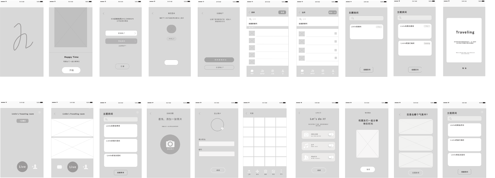

HAPPY TIME
Hello! Happy Time is a social App. Here, you’re a member of the party, though you’re not on the scene, you still make more friends and experience the interesting atmosphere of the scene in here. Also, you could have a traveling with friends whenever and wherever possible to experience the amazing and beautiful world. You also can create various kinds themes, and audaciously express your emotions with your friends sharing and experiencing the happy moments. You will become more interestingly and relaxed to express yourself on Happy Time! ❤️
Why this project?
On the crowed subway every day, people stared blankly at their smartphones. Sleepy, exhaustion and unhappy expressions are showing on their face. People are unhappy and without joyful. Though, there have multitudinous Apps on our smartphones, people just browse a mass of informations, only few people are happy.
Problem & Challenge
The problem will be solved by helping people relax on the screen of smartphone. How to make more happiness for people? And people can experience more happy emotions at any moment to relax themselves.
Analysis & Solution
From the main problems, four small questions are putted forward for
further investigation. The folloewing are the small questions:
1. How to help people improve emotions to reduce stress?
2. Under what circumstances people usually have high, positive or
negative emotions?
3. In what kind of ways to stimulate people’s emotions?
4. What will be bring the value if combining with the social platforms?
Research
According to the above questions, the investigation was conducted. Through the investigation of research data, the following points are obtained ( Users include domestic and foreign): 1. The survey found that most users suggested that when they are traveling, enjoying delicious food or have fun on vacation that those happy and exciting moments will be excited. 2. In addition, most users will feel high and relaxed when there are a large number of people or when they meet with friends. According to the above investigation to sort out the following scale diagrams that is under what circumstances are people’s emotional will be high.
Therefore, according to the results of survey the direction of problem solving is to help improve people’s emotions by playing and stimulating.
Persona

storyboard
Analysis for competitive products
Analysis for competitive products is respectively selected 8 dometic
and foreign social Apps. By comparing and analyzing the advantages
and disadvantages of these products in domestic and foreign, and
sorting out some comparison points, and making a line chart.
Finally, drawn the conclusion.
Then according to the conclusion of analysis for comparative products,
combined with the products of Happy TIme, the opportunities and
unique advantages of this product are obtained.

Line chart
Conclusion: From the comparative analysis of these social App products in China, it can be seen that the situation of these products in terms of friendship safety is generally at the middle and lower levels; The last four kinds of experience in making friends are belong to younger products which are the middle level; In terms of the effect of making friends, except for Wechat, which has a high scope of use and the rate of high utilization, the latter four products are belong to a medium level; The last four products in emotional experience and interest are on the rise, which are higher than the first four products. However, the amout of information has alomost the same influnence on the experiencm, and a large amout of information will affect the user experience. Therefore, these domestic products are in relatively weak position in the safety of making friends, emotional experience and the experience of making friends.

Conclusion: From the analysis of these products of social App in foreign, it can be seen that there is not much difference in these functions between the products. In terms of emotional experience brought by products, the products in first three have advantages over the last one. However, the functions of these products include basic friend contaction, including video and call functions, but the value of emotional experience brought by other functions is not much.
Analysis of SWOT for Happy Time

Flow chart
Low-fidelity Prototype
Launch icon
Summarize of design
Collected several words that all of which start with H, and indicating the meaning of the App. For example: happy, hi, high,hello,hai(嗨），hey. So, the selection of App startup icon is indicated by H.